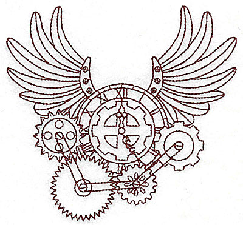

Cyclus Publications & Meetings¶
{kind=link}
Cyclus in the Literature¶
The following are notable publications regarding Cyclus:
Carlsen, Robert, Gidden, Matthew, and Wilson Paul. Deployment optimization with the Cyclus fuel cycle simulator. In Proceedings of the 2014 ANS Winter Conference, volume 111, 241–244. Anaheim, CA, Nov 2014.
Matthew Gidden, Robert Carlsen, Kathryn Huff, and Paul Wilson. An agent-based framework for fuel cycle simulation with recycling. In Proceedings of GLOBAL. Salt Lake City, UT, United States, Sep 2013.
Matthew Gidden, Robert Carlsen, Arrielle Opotowsky, Olzhas Rakhimov, Anthony Scopatz, and Paul Wilson. Agent-based dynamic resource exchange in Cyclus. In Proceedings of PHYSOR. Kyoto, Japan, Sep 2014.
Matthew Gidden, Paul Wilson, Kathryn Huff, and Robert Carlsen. Once-through benchmarks with Cyclus, a modular, open-source fuel cycle simulator. In Proceedings of the 2012 ANS Winter Conference. San Diego, CA, Nov 2012.
Matthew Gidden, Paul Wilson, and Anthony Scopatz. Developing standardized, open benchmarks and a corresponding specification language for the simulation of dynamic fuel cycles. In Proceedings of the 2013 ANS Summer Conference. Atlanta, GA, United States, Jun 2013.
Kathryn Huff. Cyclus fuel cycle simulation capabilities with the Cyder disposal system model. In Proceedings of GLOBAL. Salt Lake City, UT, United States, Sep 2013.
Kathryn Huff, Paul Wilson, and Matthew Gidden. Open architecture and modular paradigm of Cyclus, a fuel cycle simulation code. In Transactions of the American Nuclear Society, volume 104, 183. 2011.
Kathryn D. Huff. An Integrated Used Fuel Disposition and Generic Repository Model for Fuel Cycle Analysis. PhD thesis, THE UNIVERSITY OF WISCONSIN - MADISON, October 2013. URL: http://gradworks.umi.com/35/92/3592735.html (visited on 2013-12-16).
Kathryn D. Huff, Massimiliano Fratoni, and Harris R. Greenberg. Extensions to the cyclus ecosystem in support of market-driven transition capability. In Proceedings of the 2014 ANS Winter Conference, volume 111, 245–248. Anaheim, CA, Nov 2014.
N. Li, D. Brossard, D. A. Scheufele, L. Y.-F. Su, P. Wilson, and A. Scopatz. Visualizing scientific data for lay audiences: Effects of graphical characteristics on comprehension and confidence in data quality. In International Communication Association (ICA). San Juan, Puerto Rico, May 2015.
Anthony Scopatz. A dynamic, dependent type system for nuclear fuel cycle code generation. In Proceedings of GLOBAL. Salt Lake City, UT, 2013.
Cyclus Presentations¶
The following are presentations given about Cyclus:
Cyclus: Next Generation Fuel Cycle Simulator, presented at the Fuel Cycle Options Campaign meeting, 12/16/14, Las Vegas, NV
Market-Based and System-Wide Fuel Cycle Optimization, presented at the Fuel Cycle Options Campaign meeting, 12/16/14, Las Vegas, NV
Cyclus Meetings and Tutorials¶
The Cyclus community will occasionally hold meetings and tutorials, with documents shared here:
Citing Cyclus¶
Here are entries for citing Cyclus and Cycamore in your publications: